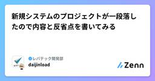
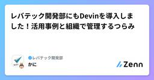
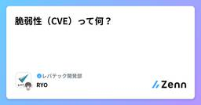

レバテック開発部のフィード
https://zenn.dev/p/levtech
レバテック開発部の公式テックブログです！
フィード

新規システムのプロジェクトが一段落したので内容と反省点を書いてみる 1
1
レバテック開発部のフィード
TL;DR新規プロジェクトに業務委託として参加して、開発・リリース・追加開発をしたので反省点などを書いていく。 開発するシステムの目的バックオフィスの作業負荷軽減のため社内システムを構築して作業が円滑に進むようにしたい。すでに作業負荷がパンクに近くなっており、このまま行くと完全にパンクが見えているため、2025年3月末リリースを死守して開発してほしいとのこと。背景について同僚が詳しく書いた記事があるので、興味があれば下記を参照して下さい。https://zenn.dev/levtech/articles/5fb5373fccec47 開発期間など2024年12月...
4日前

レバテック開発部にもDevinを導入しました！活用事例と組織で管理するつらみ 1
レバテック開発部のフィード
はじめにこんにちは、レバテック開発部の塚原です。昨今、さまざまな企業で各種 AI エージェントの活用が進んでいますが、レバテック開発部でも4月から自律型 AI エージェントである Devin を導入しています。そこで、2ヶ月半ほど組織で Devin を運用してわかったことを共有していきます。 利用状況6月時点では14チーム (計30人ほど) が利用しており、Devin が作成してマージした PR 数は177になっています。Devin に依頼したタスクの種別ごとの割合は以下の通りで、さまざまなタスクに Devin を利用してきました。タスク種別ごとの Devin の利...
5日前

脆弱性（CVE）って何？
レバテック開発部のフィード
レバテック開発部の松浪です。エンジニアの皆さん、日々の脆弱性への対応お疲れ様です。え？脆弱性の対応してないって？以前、「システムをメンテナンスしてますか？」というタイトルでZenn記事を書きました。https://zenn.dev/levtech/articles/fc8992fa45f020そこでライブラリのバージョンアップを怠ってはいけない理由の1つとして、セキュリティ上の脆弱性を突かれて攻撃されるというのを挙げました。脆弱性は個人情報の漏洩やサービス停止に陥るきっかけとなる非常に危険な存在ですが、一方で脆弱性があってもシステムは正常に動作するので、放置されがちな...
7日前

リプレイス1年の現場で見えた、やって良かった7つのこと
レバテック開発部のフィード
TL;DR具体的な数値や実例を用いた事前準備で、“説得力” のある合意形成を実現リプレイス専任チーム体制の構築で、“推進力” を確保段階的リリースで “影響を局所化” し、リスクを最小化不要コードの早期削除によって、“既存仕様の調査コスト” を削減プロセス標準化により、“品質と速度” を両立リプレイス目的の達成基準を明確にし、“曖昧さ” を排除改善タスクを定期的に実施し、“技術負債” を着実に解消 はじめにこんにちは、リプレイスチームでバックエンドをメインに担当している内藤です！私は、これまで1年ほど Web アプリケーションのリプレイスプロジェクトに携わっ...
10日前
命令型プログラミング言語のPHPで、宣言的なコードを書く
レバテック開発部のフィード
こんにちは！レバテック開発部のきょうかです。今回は「PHPにおける宣言的コード」がテーマです。私は最近Reactに触れ始めたのですが、そこで「宣言型」という言葉に出会いました。Reactは宣言的にUIを記述できるライブラリで、それが大きな特徴のひとつにもなっています。一方で、私が普段から主に使用しているPHPは、一般的に命令型プログラミング言語として認識されています。そのため、PHPは宣言的に書くことはできないと思い込んでいました。しかし色々と調べていくうちに、PHPも書き方を工夫することで宣言的なスタイルを取り入れられると知りました。この違いや、PHPで宣言的にコードを書...
11日前
初心者向け！宣言的にコンポーネントを実装するために心がけていること
レバテック開発部のフィード
はじめにこんにちは〜 レバテック開発部のせおです。バックエンドをメインにしてきましたが、最近はフロントエンドで React を書くことも増えてきました。そして「React は宣言的にかけるって聞いてたけど、僕のコードめちゃめちゃ手続きに見えるんじゃが…」みたいなことを思ってました。最近それを少し脱せたかもと感じたので、得られた気づきについて共有できればと思います。すでに書けてる人にとっては物足りない話かもしれない！ 対象読者初心者の方！僕と同じような境遇の、バックエンド書いてたけど最近フロントも触り始めた方！ 心がけていること ロジックとそれにまつわる状態...
18日前
AI コードレビュアーを"育てる"。GitHub で作るナレッジベース
レバテック開発部のフィード
はじめにこんにちは！レバテックでリードエンジニアを務める山川です。私たちの開発部では、AI エージェントによるコードレビューを導入し、開発の品質とスピードの両立を目指しています。AI のレビューは非常に強力ですが、次のような課題を感じることはないでしょうか？「もっと私たちのチーム独自のルールを反映させたい」「新しい知見が溜まるたびに、長大なプロンプトを更新するのが大変…」本記事では、こうした課題を解決するために私たちが実践している 「プロンプトとルールを分離して運用する」 AI コードレビューの手法 をご紹介します。 設計思想： プロンプトはシンプルに、ルールは...
21日前
コードの複雑さを可視化して可読性を上げる方法
レバテック開発部のフィード
コードを読んでいるときに「なんかよく分からんが複雑でわかりにくいな...」と感じることはありませんか？私は既存のコードを読んでいるときはもちろん、自分が書いたコードを読むときもそう感じることがあります。複雑さの要因を理解していないと、適切な改善ができませんよね。今回は、「脳に収まるコードの書き方」という書籍を参考に、コードの複雑さの可視化とその複雑度を軽減させる方法を解説していきます。 前提当たり前ですが、コードは書く回数よりも読まれる回数の方が多いです。コードの価値には、アプリケーションが動くことだけではなく可読性も大きく関係しています。目先のリリースを優先して「とり...
1ヶ月前
言語化ニガテ民にはZettelkastenがおすすめ
レバテック開発部のフィード
これはなにこんにちは、LT開発部のもりたです。今回はもりたが最近はじめたZettelkastenのご紹介をします。これは知識管理の手法で、アウトプットの敷居がめっちゃ下がるやつなんですが、ま〜〜よくわからん単語すぎて困ると思うので、今日はサクッと本編に入りますね。 Zettelkastenとは？Zettelkasten（ツェッテルカステン）は、学びを小さなメモにして保管する方法論です。やっていることはそれだけで、ただただ学んだことを小さくメモにまとめて貯めていきます。その際に大切な点があり、それは「自分の言葉で書く」ことと、「情報をなるべく小さく保つ」ことです。Zett...
2ヶ月前
GitHub Repository Management as Code ありかも
レバテック開発部のフィード
普段の業務で扱うリポジトリが10個前後あるため、GitHubのリポジトリの設定をterraformで管理しちゃう選択肢もありだなと思った今日この頃です。（組織全体では200個以上のリポジトリがあって手に負えません） GitHubのリポジトリの設定を管理するのって大変リポジトリの設定項目ってたくさんありますよね。↓の記事などを見たりして、完璧な設定にしたいなーと常々思っています。https://speakerdeck.com/dzeyelid/20230805-github-useful-hidden-repository-settingshttps://zenn.dev/k...
2ヶ月前
PHPカンファレンス小田原2025でスポンサーセッションした感想を書くよ
レバテック開発部のフィード
はじめにこんにちは。レバテックのひがきです。PHPカンファレンス小田原2025のレバテック開発部のスポンサーセッションで「古き良き Laravel のシステムは関数型スタイルでリファクタできるのか」を発表しました。PHPカンファレンス小田原2025では最高に素敵なメンバーと一緒にコアスタッフもやっていたのもあり、自分にとってもすごく特別なカンファレンスで登壇できて幸せでした！！スタッフとしてのブログはまた別で書くとして、今回はスポンサーセッションについて振り返りたいと思います。!後日アーカイブ動画が出る予定なので、所感多めに書きます。 所感登壇するの楽しかったで...
2ヶ月前
[DDD] 戦術的設計パターン Part 4 整合性
レバテック開発部のフィード
1年以上前になりますが、 DDD の戦術的設計パターンについて記事を書きました。ドメインレイヤーアプリケーションレイヤープレゼンテーション / インフラストラクチャー レイヤー整合性 (本記事)本記事では、 データ整合性を保つための設計パターンについてまとめます。 リポジトリhttps://github.com/minericefield/ddd-onion-litその他、採用アーキテクチャーやテーマについては Part 1 冒頭をご参照ください。 トランザクション制御IDDD を参考にトランザクション制御の設計方針を確認します。大前提として集約は強整合...
3ヶ月前
「事業継続を支える自動テストの考え方」──Autify末村さんをお招きして勉強会を開催しました
レバテック開発部のフィード
はじめにレバテック開発部の江間です。現在、レバテック開発部では自動E2EテストにAutifyを活用しています。そのご縁で、オーティファイ株式会社のQuality Evangelistであり、『テスト自動化実践ガイド』の著者でもある末村拓也さんにご登壇いただきました。講演のテーマは「事業継続を支える自動テストの考え方」です。https://x.com/tsueeemura本記事では、当日の講演の内容をかいつまんでご紹介します。スライドには載っていない話や、印象的だったフレーズも交えながら、講演の全体像が伝わるようにまとめてみました。 開催経緯半年ほど前、部内でのAu...
3ヶ月前
GitHub ActionsではSHAを指定してリスク回避しよう
レバテック開発部のフィード
レバテック開発部の松浪です。先日、GitHub Actionsで使用されているtj-actions/changed-filesが侵害され、シークレット値がログに出力されてしまうという問題が発生しました。https://x.com/azu_re/status/1900812083517943930NISTに公開された情報を確認するとtj-actions changed-files before 46 allows remote attackers to discover secrets by reading actions logs. (The tags v1 through v...
3ヶ月前
Enumとパターンマッチでコードの意図を明確にする
レバテック開発部のフィード
コードリーディングをしているときに、「この条件でこの関数を呼んでいるのは分かるが、なぜそうしているのかが分からない」と感じたことはありませんか？そんなときに効果的なのが Enum と パターンマッチを使った書き方です。Enumで「なにをしたいか（意図）」を名前として明示し、パターンマッチで「その意図に応じた処理」を分けることで、意図が明確なコードを書くことができます。Enumとパターンマッチングを使った手法はよく知られていると思いますが、最近リファクタリングをする中で、整理できる場面に遭遇したので、実際にあったPHPのコードを例に紹介します。 元のコード以下のコードは、外部シ...
3ヶ月前
MySQLのDDLを安全に使うための全て
レバテック開発部のフィード
これはなにども、LT開発部のもりたです。今回はMySQLのスキーマ変更（DDL）について調べました。DDLってなんとなく使うことは可能なんですが、データ量が増えていくにつれて障害の要因になったりもしますよね。もりたも障害が起きてDDLを調べたクチなんですが、調べれば調べるほどDDLに関する断片知識が絡まり合い、整理をつけるのが大変でした。今回はその断片を撚り合わせ、綺麗に縫合することで、この１記事だけで大体全てがわかるようにしました。もしDDLでお困りの方がいらっしゃいましたら、この記事（と、そこから辿れる諸記事）を足がかりに基礎と応用を身につけていただければと思います。また...
4ヶ月前
Next.jsで発生したAPI ルートのメモリリークを3点ヒープダンプ法で解決した話
レバテック開発部のフィード
はじめにNext.js を使用しているシステムでメモリリークが発生したので、3点ヒープダンプ法で原因を特定しました。ヒープダンプを取得するまでの手順や Chrome Devtools の Heap Profiler の使い方が分かったので、備忘録としてまとめました。 3行で要約NextApiResponse の中身は stream なので、res.end() などでストリームを終了させないとメモリリークが発生するメモリリークを特定するのに3点ヒープダンプ法という手法があるHeap Profiler が便利 Next.jsのシステムでメモリリークが発生 メト...
4ヶ月前
Docker Hubのレート制限対策をした ~Podman Desktop (Docker Compatibility)編~
レバテック開発部のフィード
もう気軽にdocker pullできない。Docker Hub未認証ユーザーだと。2025年4月1日以降のDocker Hubのレート制限が厳しいので、とりあえず自分の開発PCでmirror.gcr.ioからイメージを取得するようにしておこうと思いました。あくまで私のPC環境でしか試してないので、もしかしたら誰かの参考になるかも程度の記事です。https://docs.docker.com/docker-hub/usage/Starting April 1, 2025, all users with a Pro, Team, or Business subscription...
4ヶ月前
EMConf JP2025参加レポート！
レバテック開発部のフィード
お疲れ様です。レバテック開発部の小堺です。本記事は、2月27日に開催されたEMConfの感想などを綴ったレポート記事になります。どのセクションからでも読めますので、気になるところからお読みください！ どんなイベント？Engineering Manager Conference Japan（EMConf JP）は、EMによるEMのためのカンファレンスです。https://2025.emconf.jp/既に存在していたEM系コミュニティイベントのコアメンバー達が協力して立ち上げたのが本カンファレンスで、EM系イベントとしては過去最大規模になっています。今回のテーマは「増幅」...
4ヶ月前
MySQLのオンラインDDL（INPLACE）がどう動くか理解する
レバテック開発部のフィード
これはなにこの記事は米シリコンバレーでデータベースコンサルや教育事業を展開するKloudDB社がポストした『Understanding How ONLINE DDL (INPLACE) works in MySQL』の翻訳記事です。https://klouddb.io/understanding-how-online-ddl-inplace-works-in-mysql/この記事ではDDL（スキーマ変更クエリ）の内部処理について詳細に解説しています。DDLはシンプルに利用できるものの、一歩踏み込むと複雑怪奇で理解の難易度は高いものでした。この記事はそこに焦点を当てたものになり...
4ヶ月前